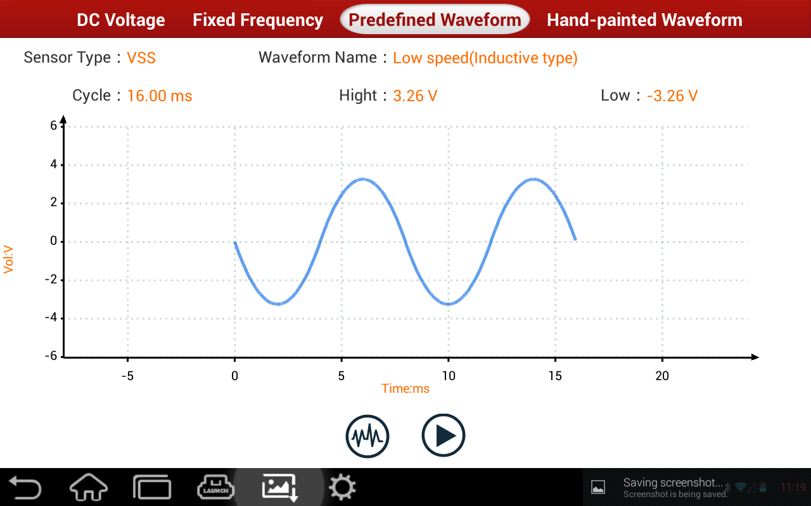

For user's convenience, common sensor wave forms are predefined. To simulate the wave form output of corresponding sensor, it's only needed to call out the predefined wave form (Select "Select Wave Form" on the bottom right side to enter the selection interface of Predefined Wave Form, then select "Sensor Type" and "Wave Form Type", click Confirm button at the bottom of wave form selection interface, the grid will then display the wave form to be simulated) and click "Start", no need to set parameters of the wave form. Text at the top of the grid displays the name of the current analog wave form, for example, "Predefined Wave Form Analog".
|  |
Select Wave Form：Click this button, in the prompted window of sensor select and wave form select, select sensor type and wave form type to be simulated.
Start (Stop): It starts/stops predefined wave form analog output.